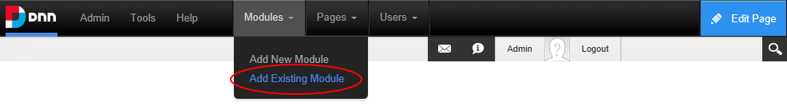
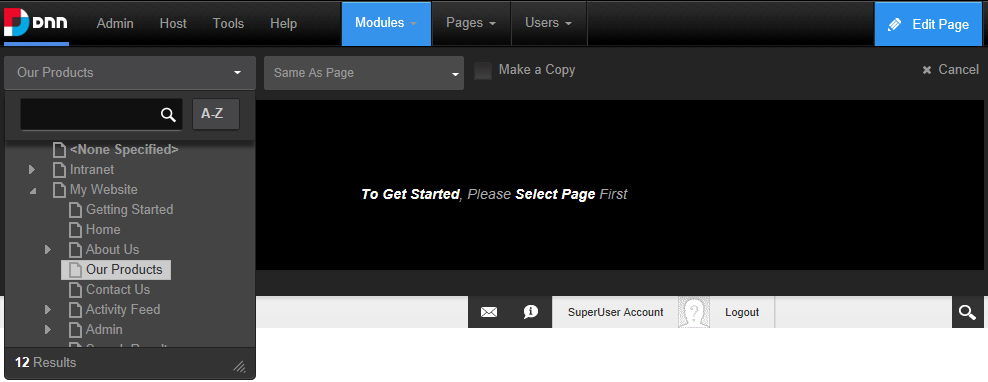
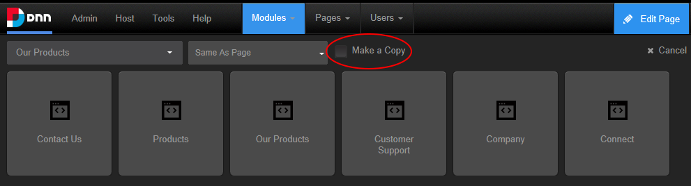
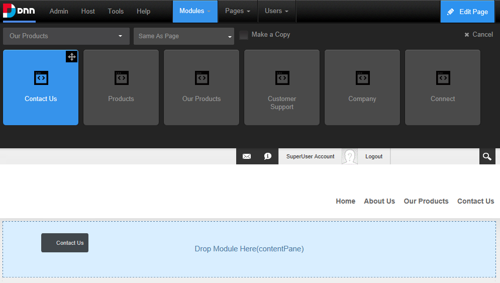

Adding an Existing Module (ControlBar)
How to add an existing module to the current page using the ControlBar. The module content is shared so if you update the content on one module the content in the other module also updates. Note: You cannot add an existing module to the page where it already exists.
Users must be authorized to deploy a module (See "Setting Permissions to Deploy a Module") and have the appropriate page editing permissions to add a module to a page. See "Setting Page Permissions" or See "Setting Page Permissions"
Important. If content localization is enabled, See "Adding a Module to a Multi-Language Site"
Option One - Drag and Drop Module
- On the Control Bar, hover over the Modules drop down menu and then select Add Existing Module.


- At Select Page, select the page that the module is located on.
- Select from these options on the next drop down list:
- Same As Page: This sets the module as visible to all roles/users who can view this page. This is the default setting.
- Page Editors Only: The sets module as only visible only to the roles/user who can edit this page. You might choose this option if you want to add content and configure the module settings before others can view the module.
- At Make a Copy, to create an independent copy of the module content that can be modified without affecting the original existing module - OR - to use the share the same module content across both instances of the module so that updating content on one module will change the content on both modules. This is the default setting.

- Locate the module to be added using the scroll bar located below the module list and then hover your mouse over the module to be added. This displays the message "Drag to add this module to the page below". Left click on the required module and then drag it down the page until the pane you want to add it to is highlighted with the message "Drop Module Here"

- Release your mouse button. The module is now added to the page.
Note: When adding an existing module from another site, a warning message will be displayed advising that the module may not support module sharing. Exceptions are the HTML and Journal modules that have be developed with module sharing capabilities.
Option Two - Insert Module
- On the Control Bar, hover over the Modules drop down menu and then select Add Existing Module. This will load and display a list of the modules within the Common category, or the previously selected category.
- Optional. If the required module isn't displayed, select the category that the module belongs to from the drop down box which is displayed above the list of modules. The available categories are:
- All: Modules within all categories including those that haven't been associated with a category. This is the default option.
- Admin: Modules that are typically used for site administration rather than managing content such as the Extensions and Digital Asset Management modules.
- Common: Modules selected as frequently used.
- At Select Page, select the page that the module is located on.
- Select from these options on the next drop down list:
- Same As Page: This sets the module as visible to all roles/users who can view this page. This is the default setting.
- Page Editors Only: The sets module as only visible only to the roles/user who can edit this page. You might choose this option if you want to add content and configure the module settings before others can view the module.
- At Make a Copy, to create an independent copy of the module content that can be modified without affecting the original existing module - OR - to use the share the same module content across both instances of the module so that updating content on one module will change the content on both modules. This is the default setting.
- Locate the module to be added using the scroll bar located below the module list and then hover your mouse over the module to be added. This displays the Move
 icon in the top right corner of the module.
icon in the top right corner of the module.
- Mouse over the Move icon to open the drop down menu and then select the pane that you want to add the module.

- The module is now added to the page.

- For modules that allow you to add content, See "Adding Module Content"
- To change the module title, See "Configuring Basic Module Settings"
- To change the module design, add the module to additional pages and add a module header or footer, See "Configuring Advanced Module Settings"
- To set the permissions to view and edit the module, See "Setting Module Permissions"